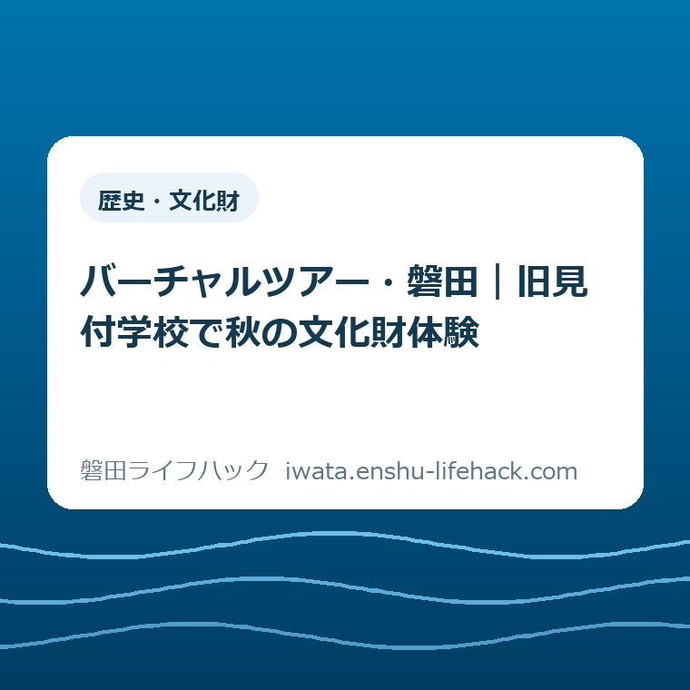
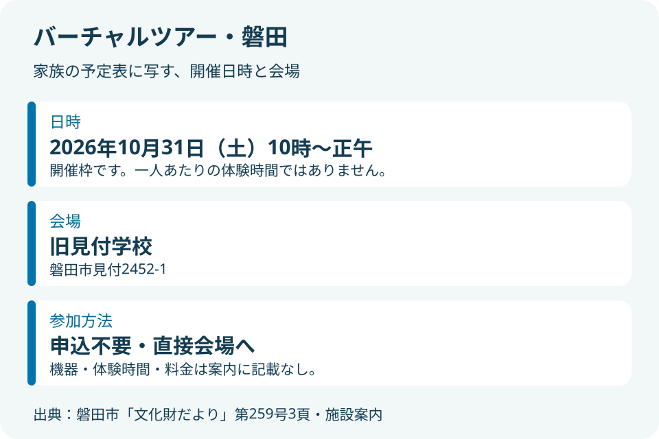
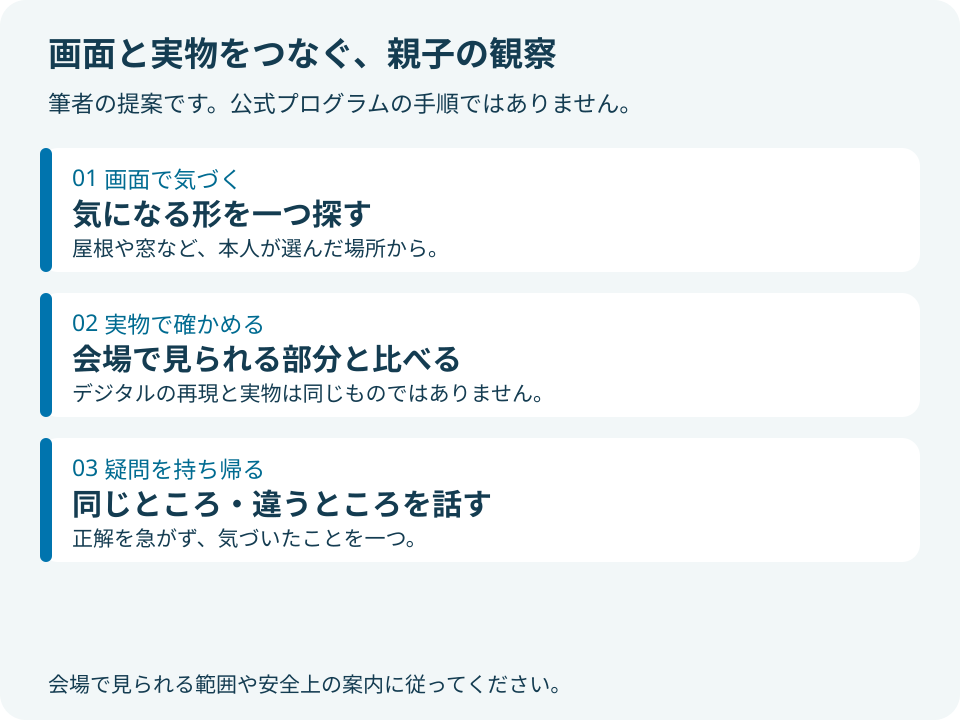

歴史・文化財
バーチャルツアー・磐田｜旧見付学校で秋の文化財体験

この記事の要点
Q. バーチャルツアー・磐田は、いつ、どこで参加できますか？
A. バーチャルツアー・磐田は、2026年10月31日（土）10時～正午、旧見付学校で開催予定です。旧見付学校や旧赤松家などをマインクラフトで再現した世界を体験します。申込不要で直接会場へ。参加条件は企画ごとに異なり、機器・体験時間・料金は今回の案内では確認できません。出発前に市公式情報を確認してください。
週末の予定を組む家族へ
バーチャルツアー・磐田は、旧見付学校を会場に、デジタルで再現された磐田の文化財に触れる催しです。制度や催しの利用条件は、世帯の事情や企画ごとに異なります。今回も、同じ紙面に載る催しの条件を一括りにはできません。まずは、この体験だけの日時と参加方法を分けて読みます。
休日に子どもと出かけるためには、仕事、習い事、食事、送迎の予定を合わせる必要があります。案内を見つけるだけでも一仕事です。そのうえ申込先や締切を探す負担が加われば、楽しそうと思っても予定表に書くところまで進まないことがあります。
私は大石浩之（磐田市／不動産業）です。この記事では、歴史の知識を先に増やすより、家族が予定を組める情報を先に置きます。文化財への入口は、子どもが好きな遊びからでもよい。これは実際に参加した感想ではなく、私の考えです。
今日できる一歩は、家族の予定表に「10月31日（土）10時～正午、旧見付学校」と候補を書き込むことです。参加を確約するためではありません。ほかの予定と重なるかを、家族で一度に見られるようにするためです。
公式案内で確認できる日時と会場
磐田市の『いわた文化財だより』第259号は、2026年10月1日発行です。3頁に「バーチャルツアー・磐田」の案内があります。開催日時は2026年10月31日（土）午前10時から正午、場所は旧見付学校、申込みは不要で直接会場へ来場する形です。
同号によると、旧見付学校、旧赤松家など磐田市の文化財や観光地をメタバース化し、マインクラフトで再現した世界を体験する内容です。ここでいうメタバースは、現実の建物や場所をデジタルの空間として扱う言葉です。会場の運営方法まで、この言葉だけで決まるわけではありません。
少し意外なのは、「バーチャル」という名前でも、案内に書かれた参加先は自宅の画面ではなく旧見付学校だという点です。公式案内は会場への直接来場を示しています。自宅から参加するための接続先や配信予定は、今回確認した案内にはありません。
また、午前10時から正午は催しの開催枠です。一人が2時間使えるという説明ではありません。一人あたりの体験時間や交代方法、最終受付時刻は記載されていません。正午に着けば参加できる、と読み替えないようにしたいところです。
申込不要という点は、事前の申込手続きが要らないという意味です。機器の数が無制限であることや、到着後すぐに使えることまで保証する言葉ではありません。待ち時間を見込めないご家庭は、来場前に会場へ確認すると予定を判断しやすくなります。

画面で気づき、実物で確かめる見方
旧見付学校は、画面の中で扱う対象であり、今回の会場でもあります。磐田市の施設案内では、明治8年（1875）に建てられた、現存する日本最古の木造擬洋風小学校校舎と説明されています。北側の磐田文庫とともに国史跡に指定されています。
木造擬洋風という言葉に戸惑う場合は、まず「木で造られた、洋風の姿を取り入れた校舎」と捉えると、目で確かめる入口になります。細かな建築用語を覚えてから訪ねる必要はありません。どの形が目に留まったかを、親子で一つ話せれば十分だと私は考えます。
市の施設案内によると、館内には明治期の授業風景や教員室などが再現され、教育資料や郷土の歴史・民俗に関する資料が展示されています。デジタル体験だけでなく、普段の学校との違いを考える材料がある施設です。ただし当日に見られる範囲は、会場の案内に従ってください。
私なら、体験前に「建物のどこが気になったか」を子どもに一つ選んでもらいます。屋根の形でも、窓の並びでもかまいません。これは推奨する見学の工夫で、主催者が用意した課題ではありません。正解を答える時間にしないほうが、親も子も話しやすくなると考えます。
体験後に実物を見るなら、画面で気になった場所が建物のどこに当たるかを探す、という順番もあります。ただし、デジタルの再現は実物そのものではありません。ゲーム上の形と建物の形が違って見えても、すぐに間違いと決めず、何を表そうとしたのかという問いにできます。
再現の精度や制作の手法、公開される範囲について、今回の催しの案内は詳細を示していません。教材としての効果も数値で示されていません。「遊べば歴史が身につく」とは断言せず、見慣れた建物に疑問を持つきっかけとして受け止めます。
デジタルと文化財の関係には、保存のために史料を記録する仕事もあります。以前の「史料を遺す」展と古文書のデジタル化の記事では、その入口を扱いました。展示期間は終了していますが、記録を残すことと、再現した世界を体験することの違いを考える補助になります。

同じ紙面の別企画と混同しない
文化財だより第259号の3頁には、見付宿たのしい文化展に関連する複数の企画が載っています。第23回見付宿たのしい文化展は、10月31日（土）と11月1日（日）の開催です。文化財課の企画がすべて同じ日に、同じ受付方法で行われるわけではありません。
バーチャルツアー・磐田は10月31日の午前です。一方、かすりの着物で町並み散策は11月1日の午前、旧見付学校と淡海國玉神社の建物を学ぶ企画は11月1日の午後と案内されています。週末の二日間を一つの催しとして記憶すると、日付を取り違える余地があります。
着物の企画には対象や定員、申込期限の記載があります。建物を学ぶ企画にも定員と申込期限があります。これらの条件をバーチャルツアーへ移してはいけません。逆に、バーチャルツアーの申込不要を見て、ほかの企画も直接行けば参加できるとは判断できません。
2026年10月28日時点では、紙面にある着物企画の10月13日、建物の企画の10月20日という申込期限は過ぎています。この記事は追加受付を案内するものではありません。すでに申込んだご家庭も、別企画の予約と今回の直接来場を分けて予定表に残すと混同を防げます。
さらに、11月29日開催のいわた文化財フェスティバル2026は別の催しです。文化財を扱う行事でも、日付、会場、体験内容が異なります。今回の午前の外出に、そのまま組み込める催しではありません。
良い点――申込みの段取りを一つ減らせる
バーチャルツアー・磐田の良い点は、事前申込みを前提にせず、会場へ直接行けると明記されていることです。申込期限を覚える、入力事項を揃える、結果を待つという段取りを、この企画では持たずに済みます。家族の予定が直前まで固まりにくい場合にも、検討の余地が残ります。
もう一つの良さは、子どもの関心と地域の歴史が同じ場所で接することです。マインクラフトをきっかけに校舎を見るなら、最初から歴史に興味があることを条件にしなくて済みます。私は、保護者が歴史の案内役を全部引き受けなくてもよい入口に価値があると考えます。
会場名と開催時刻が明確なことも、生活上の利点です。「週末にどこかへ行く」という相談より、「土曜の午前に見付へ行く候補」という相談のほうが、家族で予定を照合できます。行くかどうかの判断に必要なのは、情報の量だけでなく、予定表に写せる形です。
これらは市が公表した開催条件を受けた私の評価です。当日の混雑や参加者の満足度を実測したものではありません。申込みが不要なことを歓迎しつつ、誰にとっても負担なく参加できると広げて言わないようにします。
注文したい点――体験の見通しも知りたい
バーチャルツアーの案内で、私がさらに知りたいのは、家庭が滞在時間を決めるための情報です。今回の紙面には、一人の体験時間、使用する機器、受付の進め方、混雑時の対応が載っていません。情報が載っていないことと、運営側が準備していないことは別です。
例えば、昼前に別の用事がある家族は、短時間でも参加できるかを知りたいはずです。操作が初めての子どもなら、どのような説明を受けられるかも判断材料になります。これらを主催者の対応として断定せず、必要な家庭が尋ねる項目として整理しておきます。
料金も、今回のバーチャルツアーの欄には記載がありません。ほかの催しが無料だから同じだろうと補うことはしません。機器の持参が必要か、アカウントの準備が必要かも確認できません。案内だけを根拠に、端末の購入や有料サービスの契約を勧める理由はありません。
注文は、案内を作る人への非難ではありません。紙面には限りがあります。それでも、体験時間の目安や持参品の有無を一行添えられれば、家族が個別に問い合わせる負担を減らせると思います。制度や行事の存在を伝えることと、使う日の段取りを助けることを、つなげてほしいという私の希望です。
旧見付学校への移動は、家族の条件から考える
旧見付学校の所在地は磐田市見付2452-1です。市の施設案内にある通常の利用時間は、火曜から日曜の午前9時から午後4時30分です。ただし今回の体験は午前10時から正午。施設が開いている時間と、催しを実施する時間を分けてください。
同じ施設案内では駐車場は10台で、バス駐車可とされています。これは施設の基本情報であり、10月31日に10台分が空いているという意味ではありません。文化展当日の臨時駐車場や交通規制について、今回確認した二つの資料だけでは判断できません。
車で訪ねる方には、旧見付学校の駐車場と見学順の記事も補助になります。そちらも通常の施設情報を軸にした案内です。行事当日は、現地の表示や主催者の最新案内を優先し、周囲の住宅や店舗の敷地を代わりの駐車場所にしないことが前提です。
公共交通を検討する場合、市の施設案内にはJR磐田駅からのバス経路が載っています。「旧見付学校」下車徒歩1分、「新通町」下車徒歩5分という案内があります。ただし運行時刻や当日の変更は別に確かめる必要があり、この記事では便を指定しません。
移動手段を家族で相談するときは、歩ける距離、帰宅したい時刻、付き添う大人の予定を先に置くと話が進みます。最短の移動だけが正解ではありません。子どもや同伴者に合わせて、その日に無理なく戻れる行き方を選ぶことが先です。
旧見付学校への問合せ先は、施設案内に電話0538-32-4511と記載されています。参加の判断に関わる不明点がある場合は、「10月31日のバーチャルツアーについて」と企画名と日付を添えて尋ねると、別の体験との混同を避けやすくなります。
対案・結論――予定表には「候補」として一行
バーチャルツアー・磐田に向けた今日の一歩は、家族の予定表への記入に絞ります。「10月31日（土）10時～正午／旧見付学校／申込不要／参加候補」。この一行があれば、別々に案内を読み直さなくても、家族で日時を話し合えます。
記入する時刻は開催枠で、家を出る時刻ではありません。移動や昼食の予定まで一度に完成させる必要はないものの、ほかの予定との重なりは見えます。参加できそうなら、その家庭にとって判断を左右する不明点だけを確認する、という順番で十分です。
問い合わせる場合も、あらゆる情報を集める必要はありません。「午前中の短い滞在でも体験できるか」「端末の持参が必要か」など、今回の参加を決めるための問いを一つ選ぶ方法があります。これは確認を義務づけるものではなく、必要な家庭の負担を絞る提案です。
子どもには、ゲームだけを目的にしてもよいと私は考えます。一方で、現地で思ったほど興味を示さなくても、失敗した外出と決めなくてよい。短い時間に学びの成果を求めるより、見付にこんな建物があると知る機会として受け止めたいところです。
大石の視点――建物を見る入口を狭くしない
私は不動産業の立場から、建物は図面や説明文だけでなく、実際の場所と結びつけて見るものだと考えます。今回の催しも、デジタルの再現が実物の建物に目を向ける入口になればうれしい。ただし、私自身がこの体験を済ませたわけではなく、内容や運営を評価する段階ではありません。
私には迷いもあります。画面が楽しいほど、実物を見る時間が後回しになることもあるかもしれません。だからといって、ゲームを歴史学習の妨げと決めつける気にもなれません。まず本人が何に気づいたかを聞き、その先に建物の話がつながればよい、という立場です。
文化財の体験を家族に届けるには、価値の説明だけでは足りません。いつ、どこで、どう参加するかが読めて初めて、休日の候補になります。私は、申込みの手間を一つ減らす仕組みと、未記載の条件を勝手に補わない案内を、どちらも大切にしたいと考えます。
この記事は2026年10月28日に確認した公表情報に基づきます。開催内容、受付方法、施設の利用状況は変わる場合があります。出発前には、末尾の磐田市公式ページと公式資料で最新案内を確認してください。
よくある質問
予約は必要ですか？
磐田市の文化財だより第259号では、10月31日のバーチャルツアー・磐田は申込不要で、直接会場へ来場するよう案内されています。ただし、申込不要は待ち時間がないという意味ではありません。別日に行う着物や建物の企画には申込条件があり、今回とは別です。出発前に市公式情報をご確認ください。
自宅からオンライン参加できますか？
今回確認した公式案内は、旧見付学校での会場参加を示しています。自宅向けの接続先や配信予定は記載されていません。バーチャルという名称だけでオンライン参加できるとは判断できません。開催は2026年10月31日10時～正午で、通常の開館時間とは異なります。
何歳から参加でき、何を持っていけばよいですか？
今回のバーチャルツアーの案内には、対象年齢、必要な持参品、使用機器、料金の記載がありません。同じ紙面の着物企画の対象年齢を当てはめないでください。参加判断に必要な場合は、旧見付学校へ企画名と開催日を伝えて確認してください。機器の購入やアカウントの用意を先に勧める根拠はありません。
参考にした公式情報
- 磐田市・いわた文化財だより第259号（2026年10月1日発行）、3頁（2026年10月28日確認）
- 磐田市・施設ガイド 旧見付学校附磐田文庫（2026年6月29日更新）（2026年10月28日確認）
最終確認日：2026-10-28 ／ 本記事は公表情報と執筆者の見解を分けて記載しています。制度・数値・公開状況は変更される場合があるため、最新情報は磐田市公式ページでご確認ください。